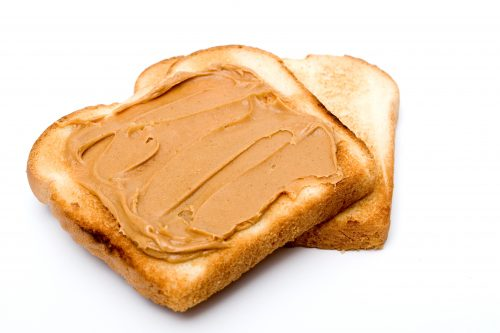

Peanut Butter Sandwich

Description
A classic staple of many households, the easy peanut butter sandwich goes far and is versatile for any quick snack
Ingredients
Directions
- Place two slices of bread on plate
- Using a butter knife, spread peanut butter over your slices
- Squish pieces together, peanut butter facing inward, and voila!